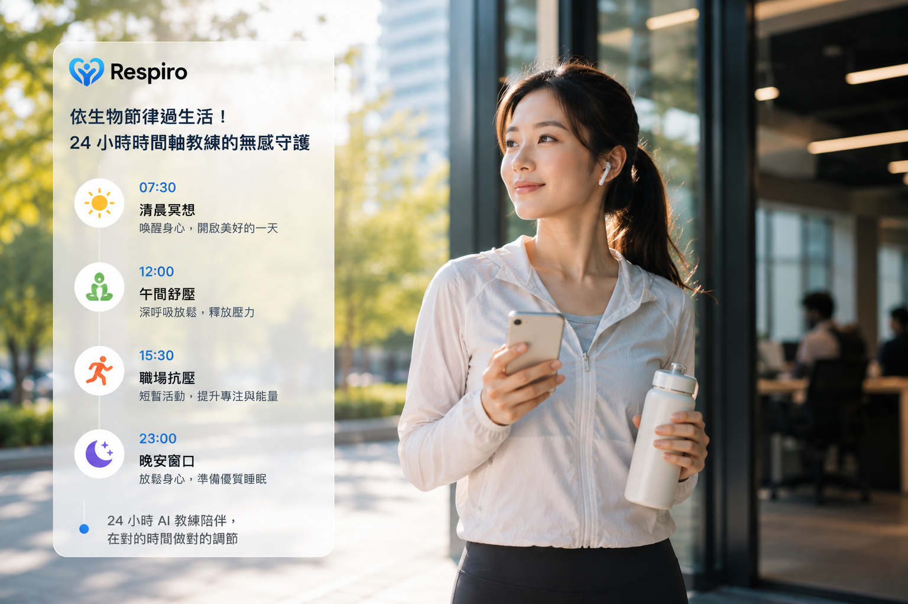

search...
辦公衝刺沒空看手機？系統自動切換場景，將久坐或高壓心率警示無縫連動至電腦 Slack。讓你手不離鍵盤也能適時補水、優雅踩煞車，維持整日的高效續航力！
智慧系統能精準感知你當下的時空，在外用手機溫暖陪伴、上班用 Slack 體貼提醒，讓身心微調完美融入日常，幫助白領輕鬆拿回身體主導權。
一個人自律很難，一群人堅持很酷！網頁與手機連動「Streak 習慣連勝排行榜」，和朋友挑戰 PK 壓力控制與水分補給，用數據良性互動，讓健康管理變有趣。
報復性熬夜是大腦壓力未釋放的訊號。AI 交叉分析白天自律神經與 HRV 數據，網頁後台精準預測每晚「睡眠窗口」倒數，搭配睡前放鬆，拯救失眠白領的高效修復。
每日久坐超六小時，不僅肩頸痠痛，更讓核心與下肢肌肉休眠。利用 AI 自動化閉環微干預，透過Ｒespiro微提醒進行 3 分鐘椅子拉伸，不打擾節奏地喚醒身體彈性。

讓健康融入自然節律。從 07:30 清晨冥想、12:00 午間舒壓、15:30 職場抗壓到 23:00 晚安窗口，24小時時間軸 AI 教練陪你移動，在對的時間做對的調節。